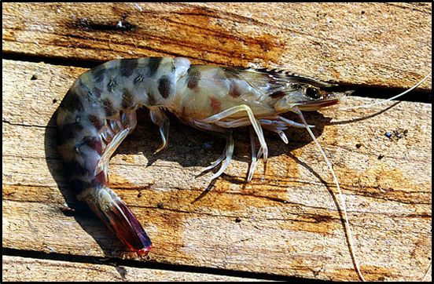

- Αστακός (Pallinurus vulgatis)
Οι αστακοί βρίσκονται σε βάθη από 2-100 μέτρα, συνήθως στις βραχώδεις ακτές με φύκια, μέσα σε ρωγμές και τρύπες. Αναζητούν την τροφή τους την νύκτα. Αυτή περιλαμβάνει μικρά οστρακοειδή, ψάρια και σκουλήκι του βυθού. Οι τεράστιες δαγκάνες τους χρησιμεύουν για να πιάνουν και να τεμαχίζουν τη λεία τους.
- Καβούρι (cancer)
Το καβούρι θα το συναντήσουμε κυρίως στα βράχια που καλύπτονται από βλάστηση, μέσα σε ρωγμές ή κάτω από τις πέτρες της παραλίας, σε βάθος μέχρι και 30 μέτρα το καλοκαίρι, ενώ το χειμώνα σε μεγαλύτερα βάθη μέχρι και 50 μέτρα.
- Γαρίδα
Η γαρίδα κινείται κυρίως στους πετρώδεις βυθούς ή σε βυθούς με φύκια, ενώ πλησιάζει στα ρηχά κοντά στις παραλίες, στις εκβολές των ποταμών και σε όρμους με λεπτή άμμο. Φτάνει τα 8 εκ. μήκος, ενώ είναι χαρακτηριστικό το διαφανές της κέλυφος.
